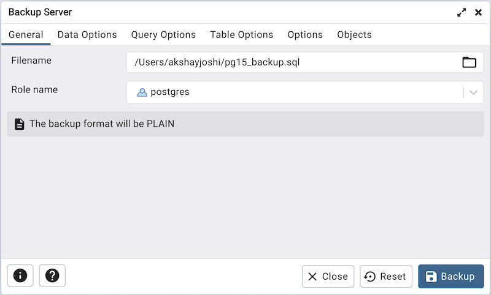
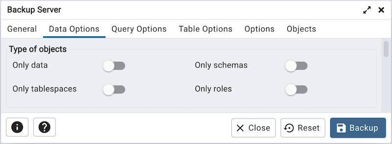
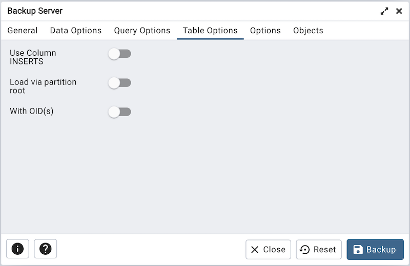
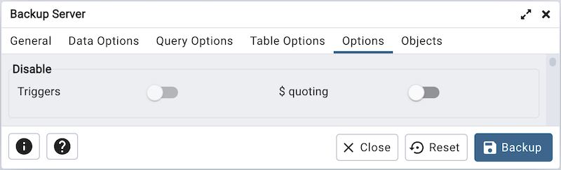

Backup Server Dialog¶
Use the Backup Server dialog to create a plain-text script that will recreate the selected server. You can use the pgAdmin Query Tool to play back a plain-text script, and recreate the server.
Use the fields in the General tab to specify the following:
Enter the name of the backup file in the Filename field. Optionally, select the Browser icon (ellipsis) to the right to navigate into a directory and select a file that will contain the archive.
Use the Encoding drop-down listbox to select the character encoding method that should be used for the archive. Note: This option is visible only for database server greater than or equal to 11.
Use the drop-down listbox next to Role name to specify a role with connection privileges on the selected server. The role will be used for authentication during the backup.
Click the Data Options tab to continue. Use the fields in the Data Options tab to provide options related to data or pgAdmin objects that correspond to pg_dumpall.
Move switches in the Type of objects field box to specify details about the type of objects that will be backed up.
Move the switch next to Only data towards right position to limit the back up to data.
Move the switch next to Only schemas to limit the back up to schema-level database objects.
Move the switch next to Only tablespaces to limit the back up to tablespaces only.
Move the switch next to Only roles to limit the back up to roles only.
Move switches in the Do not save field box to select the objects that will not be included in the backup.
Move the switch next to Owner towards right position to exclude commands that set object ownership.
Move the switch next to Role passwords towards right position to exclude passwords for roles.
Move the switch next to Privileges towards right position to exclude commands that create access privileges.
Move the switch next to Tablespaces towards right position to exclude tablespaces.
Move the switch next to Unlogged table data towards right position to exclude the contents of unlogged tables.
Move the switch next to Comments towards right position to exclude commands that set the comments. Note: This option is visible only for database server greater than or equal to 11.
Move the switch next to Publications towards right position to exclude publications.
Move the switch next to Subscriptions towards right position to exclude subscriptions.
Move the switch next to Security labels towards right position to exclude Security labels.
Move the switch next to Toast compressions towards right position to exclude Toast compressions. Note: This option is visible only for database server greater than or equal to 14.
Move the switch next to Table access methods towards right position to exclude Table access methods. Note: This option is visible only for database server greater than or equal to 15.
Click the Query Options tab to continue. Use these additional fields to specify the type of statements that should be included in the backup.

Move the switch next to Use INSERT commands towards right position to dump the data in the form of INSERT statements rather than using a COPY command. Please note: this may make restoration from backup slow.
Use the Maximum rows per INSERT command field to controls the maximum number of rows per INSERT command. Note: This option is visible only for database server greater than or equal to 12.
Move the switch next to On conflict do nothing to INSERT command towards right position to add ON CONFLICT DO NOTHING to INSERT command. This option is not valid unless Use INSERT commands, Use Column INSERTS or Maximum rows per INSERT command is also specified. Note: This option is visible only for database server greater than or equal to 12.
Move the switch next to Include DROP DATABASE statement towards right position to include a command in the backup that will drop any existing database object with the same name before recreating the object during a backup.
Move the switch next to Include IF EXISTS clause towards right position to add an IF EXISTS clause to drop databases and other objects. This option is not valid unless Include DROP DATABASE statement is also set.
Click the Table Options tab to continue. Use the fields in the Table Options tab related to tables that should be included in the backup.
Move the switch next to Use Column INSERTS towards right position to dump the data in the form of INSERT statements and include explicit column names. Please note: this may make restoration from backup slow.
Move the switch next to Load via partition root towards right position, so when dumping a COPY or INSERT statement for a partitioned table, target the root of the partitioning hierarchy which contains it rather than the partition itself. Note: This option is visible only for database server greater than or equal to 11.
Move the switch next to With OIDs towards right position to include object identifiers as part of the table data for each table.
Click the Options tab to continue. Use the fields in the Options tab to provide other backup options.
Move switches in the Disable field box to specify the type of statements that should be excluded from the backup.
Move the switch next to Triggers (active when creating a data-only backup) towards right position to include commands that will disable triggers on the target table while the data is being loaded.
Move the switch next to $ quoting towards right position to enable dollar quoting within function bodies; if disabled, the function body will be quoted using SQL standard string syntax.
Move switches in the Miscellaneous field box to specify miscellaneous backup options.
Move the switch next to Verbose messages towards left position to instruct pg_dumpall to exclude verbose messages.
Move the switch next to Force double quotes on identifiers towards right position to force the quoting of all identifiers.
Move the switch next to Use SET SESSION AUTHORIZATION towards right position to include a statement that will use a SET SESSION AUTHORIZATION command to determine object ownership (instead of an ALTER OWNER command).
Use the Exclude database field to not dump databases whose name matches pattern.
Use the Extra float digits field to use the specified value when dumping floating-point data, instead of the maximum available precision.
Use the Lock wait timeout field to do not wait forever to acquire shared table locks at the beginning of the dump. Instead, fail if unable to lock a table within the specified timeout.
When you’ve specified the details that will be incorporated into the pg_dumpall command:
Click the Backup button to build and execute a command that builds a backup based on your selections on the Backup Server dialog.
Click the Cancel button to exit without saving work.
pgAdmin will run the backup process in background. You can view all the background process with there running status and logs on the Processes tab